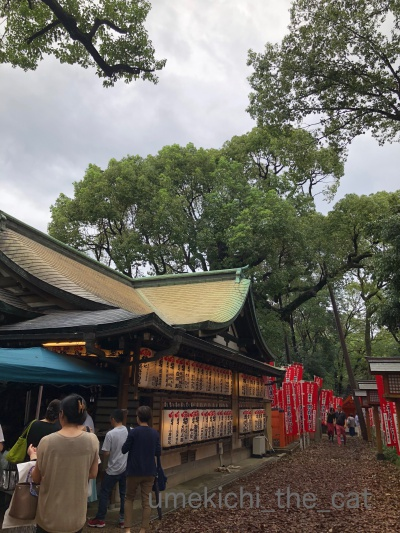

脱力する梅吉となにわの底ヂカラ [梅吉]


（歯をむき出してマジ寝してますw）
台風直後は物流がうまく機能していなかったのか
スーパーの商品棚がスカスカのこともありましたが我が家付近では元に戻っています。
家庭から出た路肩の災害ごみもほとんどが片付けられました。
北海道地震の方は
避難生活をされている方が9日17時半の時点で2617人とのこと。
半数以上が震源に近かった厚真町の方です。
札幌に限っていえば電力の回復もかなり進んで
通常通りの生活が出来ている方もいますが470人近くの方が避難生活をしています。
避難所での生活の疲れもかなりのものでしょう。
公営住宅の確保が進められて被災した方の住宅に当てる準備が進んでいるとのこと。
北海道は9月も後半になると朝晩は暖房が必要な地域も出てきます。
その前に皆さんがひと心地ついて暖かく過ごせる環境で暮らせますように。
あいにくの雨模様でのはったつさん。でもたくさんの参拝の方々が来ていました。
参拝出来なかった一宮。
屋根に応急処置をして参拝できるようになっていました。

初辰まいりの中心をなす神社、楠珺社（なんくんしゃ）。
大きな楠が御神体であり御神木なんですが、ご無事でした！！よかった。。。
住吉神社をなす４つの社殿がある敷地内と
初辰まいりの４神社（種貸社、楠珺社、浅澤社、大歳社）のまわりは綺麗に整えられていました。
よくぞここまで・・・一の宮の矜持、なにわの底力見たように感じました。
敷地内、人の立ち入らないところや池の中には未だ折れた枝がそのままだったり
台風の傷跡がのこったままでした。
が日々懸命に作業されている方々のおかげでこれらもすぐに撤去されるでしょう。
住吉大社の復旧は進んでいます！
･゜ﾟ･*:.｡..｡.:*･゜ﾟ･*:.｡. .｡.:*･゜ﾟ･*･゜ﾟ･*:.｡..｡.:*･゜ﾟ･*:.｡..｡.:*･゜ﾟ･*
東京に住む兄夫婦が札幌の実家へ様子見に。
写真を送ってもらいました。
壁の亀裂。この他にも数箇所。
キッチンのタイルが剥がれ落ちていました。
今後の事は、まず市に罹災証明書の申請です。
実家は地震保険に加入しているのですがこのくらいの被害で保険がおりるのでしょうか。
我が家も地震保険に加入しているのでとても気になります。
（恥ずかしながら保険の内容をよく理解してないし。）
みなさんは興味あるかな？？？
地震保険のこと（私の覚書のためにも）記事にしたいなと思っています。
兄夫婦は片付けの手伝いに行ったはずなのになぜかDVD鑑賞会になった様子。
一体何を見ていたのかというと・・・
ちぃさん、小学校一年生の運動会の様子・・・なんでー！！
兄からは「母が喋りすぎてこまる」とLINEが。
手伝いよりも話し相手が欲しかったのかもしれません（父じゃダメw）
私が電話しても喋り倒してくるんですけどねw
顔見て喋ると違うのかな。
ま、良い気分転換になればと思っています。
〜追記〜
昨夜大きな揺れがあったようですが実家は何事もなかったそうです。

カフェオレ色の梅吉

梅吉 2023年8月10日 永眠


梅吉と出会った譲渡会

犬猫の理由なき殺処分ゼロ
妄想広告
UMEKICHI 光

爆発的に早い！
時々攻撃的！
Thanks to Mr.Boss365
爆発的に早い！
時々攻撃的！
Thanks to Mr.Boss365

梅吉さんがお座布団に伸びーしてるのを見て私もリラックスできました。
大阪も北海道も少しずつ良くなっているのですね。ご実家の被害は気になるところですが、お母様はそれより昔話に花を咲かせて喜ばれたご様子。「ちぃちゃん可愛かったわね~」なんてお喋りしてらしたのかしら。
by zombiekong (2018-09-10 02:08)
梅吉さんを見ているだけで、心が落ち着きますね♪
ご実家の皆さまが元気そうで良かったです。
ですが家の修繕などまだまだ大変そうですね・・・
お話相手が出来てお母さまも嬉しそうですね！
by きぃ (2018-09-10 06:48)
「手伝いより話し相手」、何か分かる気がします。
懐かしのビデオ見て、盛り上がったんだろうなー(≧∀≦)
住吉さんを含め、みんな普通の日常に早く戻れますように。。。
by よーちゃん (2018-09-10 07:15)
梅吉さんのノビ～とした姿には本当に癒やされます(^^)
しかし、最近の自然災害は異常としか思えませんね。
早い復旧復興を願うばかりです。
by kou (2018-09-10 07:25)
我が家も地震保険を掛けてますが
正直言って内容はまったく理解してません。
実は見直しが必要だったりして＾＾；
by ぽちの輔 (2018-09-10 07:44)
頑張ることはもちろん大切ですが、
頑張りすぎないことも大切＾＾
梅吉さんを見習って上手に息抜きして寛ぐ時間は必要ですよねぇ( ^ω^ )
by ニッキー (2018-09-10 07:57)
梅吉さん布団で伸びていますね(^^)
by ma2ma2 (2018-09-10 09:27)
なにわの底ヂカラ。
北海道民も底ヂカラあると思います^^
だって開拓した人たちだもの！
小学生のちぃさん、めんこい子だねー^^
土日はネットはおやすみしてました。
札幌の友達＆母とLINEでやりとりしていたよ。
会話が出来るってことが、とにかく嬉しかったみたい。わたしも嬉しい。
by リュカ (2018-09-10 09:41)
沢山喋れて良かった(〃'∇'〃)
20年前の映像かしら(〃'∇'〃)
by middrinn (2018-09-10 10:21)
おはようございます。
梅吉君！！歯をむき出してwww爆睡？してますね？救いの癒し神様です！！
壁の亀裂？被害が少なくは無いですが・・・
怪我・命にかかわる重大な事でなくて良かったですね！！
小学校一年生の「神童ちぃさん」の運動会を鑑賞して・・・
家族皆さんで神頼みしてますね！！白神様？白虎ですね？多分！？(=^･ｪ･^=)
by Boss365 (2018-09-10 11:16)
地震保険、実家はかけてません。
今のマンションはどうなんだろう？？ 調べてみます！
小さいちぃさんのDVD見ながら、あの頃あんなことがあった～こんなこと言った～とお母さま盛り上がられたのでしょうね(#^^#)
手伝いより話し相手、ウチの母もそう。本当によく喋るので私は相槌しか打てません^^;
梅吉さんを見習ってみんなでリラックス♪
被災された方々の日常が少しでも早く戻りますように。
by ゆきち (2018-09-10 12:48)
梅吉さんののんびりムードは最高に良いですね。
おざぶとの一体化した梅吉さん気持ち良さそうです。
梅吉さんから幸せが伝わってきます。
小学校1年生のちぃさん、娘が似ているような気がします。
歳をとると男性はより雑談をしなくなるようです（面倒だそうですw）
我が家も（必要なことは話しますが）夫と二人の時は静かなものですよ。
男性と女性とではスイッチがより違ってきます。
若い頃、
「年配の女性は、なぜ夫の不満を言うのか？」と思っていましたが、
この歳になって分かるような気がします。
女性が長い時間をかけて積み上げてきた家事現場を、
退職して時間のある男性が、難なく（無意識に）崩し始めます（笑）
今までは、出勤すると元に戻っていた色々なことが、変わって来るのです。
女性にとっては諦めるのが1番ですが、
鬱屈とした何かのはけ口が欲しいと思います。
で、女性は喋ると思います。
お母様の話相手はお父様でもお兄様でもなく（笑）お嫁さんでしょう。
しかし、お嫁さんも理解はなかなか難しいでしょうね。
でも、お母様は雑談を聞いてくれて、
相槌をうってくれるだけで、満足でしょう。
私の場合は、娘との雑談で「叩いてやりたいわ〜」で解消してます。
娘はいい迷惑だと思いますよ。
近くに老人がいる若い人はホント大変です（笑）
by kiki (2018-09-10 13:18)
一宮。屋根の応急処置が痛々しいけど、復旧大分進んでいるのですね。
なにわの底力(*^-^*)
ご実家も、写真を見るとどれだけ揺れたのか怖くなるけど
お兄さん夫婦が駆けつけてくれて、ちぃさんの運動会の映像をみて。
みんなで笑顔になったのかな？
ちびちびちぃさん、あどけなくって可愛いね～。私もニコってなったよ(≧▽≦)
by emi (2018-09-10 14:55)
ちらキバを越してここまで剥きだしだとかえって気持ちいいなあ(*^^*)
by palpal (2018-09-10 14:59)
梅しゃま、ヨガでリラックス…正に猫のポーズ！！(^^)b
こんなにも災害続きで被災された方がたくさんいて、毎日が大変なのに…
災害対策が先じゃない？オリンピックの競技場作る人手も税金もそっち優先じゃない？って友達と話してた日曜の夜…
お兄様ご夫婦が現地に飛んでくれたのは助かりますね。きっとお母様も嬉しかったと思うし、昔の楽しかった話でストレスも吹き飛んだのではないでしょうか。
私も別件で会った友達と「で、本題なんだっけ？」と脱線する事はしょっ中ですwww
「よくそんだけ喋ることあるな」って男性は思うようですが…男脳と女脳の違いだと本で読んだ事があります(^^;
by くつしたにゃん (2018-09-10 16:58)
梅吉さんの思いっきり脱力ポーズ☆伸び～～～癒やされます＾＾
歯むき出してマジ寝、すごい＾＾
なにわの底力、あるんですね～。住吉さん、素敵です。
北海道の地震は怖かったですね。避難所ぐらしが長くなると辛いですよねえ。
タイルが落ちて‥
お母様、話し相手は嬉しかったでしょう。よく喋るのは女性には大事な交流。男性にとってはよく喋る相手ほど親しいというわけではないみたいです。
by sana (2018-09-10 18:11)
王子の寝顔は神々しいくらい・・・被災されたすべての方々が一日も早く元の暮らしに戻られますように。。。
by Ginger (2018-09-10 21:08)
台風、大変でしたね。お見舞い申し上げます。
腕びよーん、の梅吉さんもかわいい^^
by ryang (2018-09-10 21:27)
ワタクシ的には、両手を伸ばしてお座布にのっかる梅吉さんの写真がniceです。^^)
ご実家でご家族とDVD鑑賞会とお喋り、とても良い息抜きになったことでしょう。
by yes_hama (2018-09-10 21:44)
梅吉さんのリラックスした表情や、
小さなちぃさんのかわいい表情で
皆さんがホッとしているんですね。
by riverwalk (2018-09-10 21:58)
細やかな復旧力はヒトのなせる技ですね。
それだけ諸々にかかる労力も必要ですが・・・
全国的に穏やかな日常が戻りますよう。
そして！梅さまの周りには平和で穏やかな空気が流れていますね。
やはり、こんなご時世、癒されるのは動物だけ・・・(｡-_-｡)
ミニちぃさん、かわいいですよ（*´艸｀*）
我が家も地震（火災）保険、入ってます。
水没保証は確か、3階以上は不要と言われたので付けていません。
地震保険料は、地域（都道府県）によって違うみたいですね。
東北地震の際、都内の友人マンションの壁に亀裂が入りました。
あれはどうだったんだっけな。。（聞いてみます）
by Ja-Kou66 (2018-09-11 00:13)
そぅ、北海道はこれから寒くなって来るのに、計画停電をやるとか言ってるけど大丈夫なのだろうか？（ﾟ□ﾟ）
by 英ちゃん (2018-09-11 06:42)
梅吉さん、2枚目のお写真癒されます。
by ニコニコファイト (2018-09-11 07:15)
台風に続く大震災。
本当、心が折れそうになります。
実家・青森も結構な揺れだったらしく、揺れが長かったから、
東日本大震災の記憶が頭をよぎったらしいです。
それにしても、日本各地での災害続き。。。
前向きに頑張ろう、と思う頃に、どこかで何かが起こる。
家族のありがたみを、つくづく感じます。
そして、ちぃさん、ちぃさんご実家が無事で何よりです。
by morichan (2018-09-11 14:59)
2枚目の梅吉さん、脱力感がハンパなくて
サイコーですね～(≧▽≦)
ちぃさんのご実家も大変でしたね…。
でもちびっ子ちぃさんのビデオで盛り上がって
楽しそうで良かったです♪
これからの時代、火災保険は当然ですが、他に地震保険、洪水保険、
高波保険、暴風保険…たくさん必要かも＾＾；
by マーヤ (2018-09-11 19:13)
zombiekongさん＞
お座布団の伸びー。気持ち良さそうですよね＾＾
実家では「可愛かったわね」なんて穏やかなら良いのですが
その場に居ないのを良いことに
有る事無い事「肴」になってたと思いますw
きぃさん＞
家の修繕は保険屋さんの査定、場合によっては罹災証明と
ひたすら順番待ちになりそうです。
雪が積もる前にカタが付けばよいかな、です。。。
母は普段からおしゃべりなんですがそれが加速してたようで・・・
兄嫁に同情ですwww
よーちゃん＞
普段から「話し相手」の人なんですが
地震の被害にあってその気持ちが余計に強くなってたみたいです。
喋りまくって気が済んだか、というと余計に興奮したらしく（子供か！）
兄が帰京した後、弾丸トークの電話がかかってきましたwww
懐かしのビデオ、生贄の気分です！
kouさん＞
kouさんも一緒にノビ〜、いかがですか＾＾
大阪も北海道も地域によって復旧の進んでるところ
進んでないところ差が出てきているようです・・・
色々クリアしなきゃならない問題があるようですが
進んでいないところが取り残されているようで辛いです。
ぽちの輔さん＞
生命保険にしても火災（地震）保険にしても
説明聞いたときは理解してるんですけど
すぐにすっかり忘れちゃいますよね・・・
証書、加入時の案内を見直してますw
ニッキーさん＞
そうなんです！
ほどほどに頑張りながら上手く乗り切って欲しいと思っていますm(_ _)m
なるようにしかならないこともありますし・・・
ma2ma2さん＞
思いっきり伸び〜です＾＾
ma2ma2さんは早くおうちのお布団で伸び〜って
出来ると良いですね！
リュカさん＞
そうだよね！
あの凍てつく大地を開墾した人たちの末裔だもの。
大丈夫だ、なんもだ。って言いながら
確実に進んで行ってくれるよね＾＾
小学生のちぃさんはゆでたまごみたいだから「たまちゃん」って
呼ばれてました(〃▽〃)
middrinnさん＞
それじゃなくてもしゃべりたい母なんですが
地震で怖い思いをしたせいもあるのか
アクセル全開だったようですw
20年！？あ、歳がバレちゃうわー！
でも、正解！！これはナイショですよん ( ´艸｀)
Boss365さん＞
歯むき出し寝、すごい顔でしょーＯ(≧▽≦)Ｏ
お願い、そのままでいて！とカメラをあわてて構えました＾＾
壁の亀裂、表面の板の亀裂のように見えますが
土台の木材にも影響があるかもしれないので
ちゃんと検査するように手配するとのことでした。
北海道は雪が降って屋根に重みが加わると
思わぬところで地震の被害の影響が出るかもです。
ちぃさんは神童説は初めてです！ありがとうございます！！
おっとは自分で「神童だった」と自己申告してますが
そうすると神童（だった）夫婦！？
いずれ住吉大社に祀られるかもしれません(*>艸<)
ゆきちさん＞
ゆきちさんのお母様と私の母、なんか似てるかもって
以前から他所に書かれていたコメントを見て思ってました(^_^;)
沈黙の時間があると相手を退屈させてるんじゃないかと思うらしく
一応のサービス精神からしゃべるしゃべる・・・
ホント、相槌ぐらいしか打てませんよねw
さらにうちの母は相手の話はあまり聞いてなく自分も何喋ったか
あまり覚えてないという凄技も持ってますwww
むかしのDVD、変な事言われてたんだろうなという気しかしないです(-_-メ)
kikiさん＞
あら、娘さんと似通ったところがあるなんて光栄です (〃▽〃)
この頃はゆで卵みたいな顔してたので「たまちゃん」って
呼ばれてましたw
雑談が面倒・・・私おっさん化してるんでしょうか。
ちょっとわかる気がします (^_^;)
我が母の場合は相手に相槌を打つ余裕すら与えない勢いの時があるので
兄嫁には本当に同情しますw
うちのおっとも時々目を白黒してますよー。
が、両者とも年に１〜２度会うくらいなのでがんばれ、
とも思ってますwww
私は、とりあえず鬱屈する思いは梅吉に聞いてもらいます(^_－)☆
emiさん＞
応急処置、ブルーシートじゃなくてさすが！って思いました。
この社殿の内部ではブルーシート使っていたけど
屋根だとさすがに興ざめしますよね・・・
そういう気の回し方も好ましいと思いましたよ＾＾
私の運動会の映像、一体何言われてたんだろう・・・
「昔は可愛かったんだけどねー、今はさあ。」
みたいな想像しかできませんw
palpalさん＞
歯が乾くよねーと眺めてましたよ＾＾むき出しすぎや(^_^;)
くつしたにゃんさん＞
毎月どこかで何か災害が起こっている感じですよね・・・
対策は個人も含めてあれこれしないとダメですよね！
「よく喋るな」の中でもうちの母のは特別凄くてw
身内だから余計にそう感じるのかいい加減に黙っとけ！
と思うことも多々ありますwww
sanaさん＞
歯の剥き出しはあくびの途中？と一瞬思ったのですが
よく見ると静止してましたw
大阪の方々はこういう時に瞬発力あるなって思います。
北海道はのーんびり。
でも開拓者の末裔ばかりなのできっとたくましく復旧していくと思います＾＾
母の場合は、相手というより餌食or生贄という方が当てはまるかも・・・
本当によく喋るんです！自分でも何話しているか収集つかなくなると
私に無茶振りしてくるので油断できませんw
Gingerさん＞
元の暮らし、本当に1日でも早く
自分のお家に帰ることが出来るといいなと思ってます。
北海道の冬は長くて厳しいので尚更そう思います！
ryangさん＞
台風は、びっくりするぐらい色んなものが飛んできました。
窓ガラスに当たらずに本当に良かったです！
yes_hamaさん＞
お座布団伸び〜、人気があるんですよ＾＾うれしい！
おしゃべりで息抜きできるならいつでもどうぞと言いたい所ですが
そんなこと言ったら我が母は毎日電話してきて
１〜２時間は一人で喋ると思いますwww
riverwalkさん＞
ホッとしてくれたのなら嬉しいですが
言いたい放題言って鬱憤を晴らしたんじゃないかと思ってますwww
Ja-Kou66さん＞
枯葉も落ちた枝も本当に綺麗になっていてびっくりしました。
神様が相手だとモチベーションが上がるのでしょうか＾＾
地震（火災）保険、出来れば使いたくない保険ですが
今後のためにもちょうど良い機会だなって思ってます。
東北地震で都内のお家でもそのような被害が・・・
壁の亀裂、さぞかしびっくりされたでしょうね。
保険会社の査定、罹災証明どちらにしても
とっても時間がかかるようです。
災害は一箇所に集中して起きるから仕方がないのですが・・・
英ちゃんさん＞この冬は乗り切れたとしても
今後どうしていくんだろうって思います。
本州の夏にはエアコン、北の市町村では冬は暖房
どちらもないと死人が出ちゃいますよね・・・
ニコニコファイトさん＞
梅吉の得意なポーズでもあります＾＾
morichanさん＞
北海道から海を渡った地域も揺れたのですね・・・
この頃の日本は毎月どこかで災害が起きているくらいの
印象を受けてしまいます。
台風も地震も水害もどれも本当に恐ろしいです
これ以上何も起きませんように！と願わずにはいいられません。。。
マーヤさん＞
帰宅難民保険なんてのも必要かもしれませんね・・・
子供の頃の映像はきっとおもちゃにされていたんだろうな。とw
「昔は可愛かったんだけどねー、今ではすっかり〜〜〜〜〜」
みたいな想像しかできませんw
by ちぃ (2018-09-12 22:35)